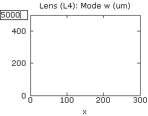
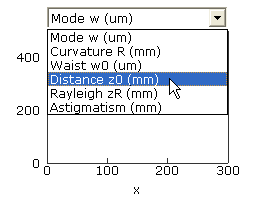
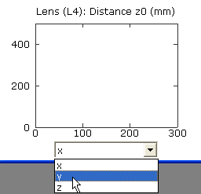

LaserCanvas 5 > Tutorials > Collimating Telescope >
Part 3. Create Graphs
< Prev | Next >
Although we will attempt to optimize the system using the Solver in the next section, it is worth creating some graphs to observe the effects of changing the distances we just implemented. The parameters of relevance are the spot size at the collimating lens, and the distance z0 to the waist.
-
Select the second (collimating) lens.
-
Select menu Tools | Optic Graph or click the
 Optic Graph button on the toolbar.
Optic Graph button on the toolbar.
-
In this graph, we wish to examine the mode size w as a function of variable x. These are the default values.

-
Click near the top of the Y axis and enter an upper limit of 5000. Or, edit the Y-Axis Range in the Property Manager.
- Create a second optic graph for the collimating lens, again using menu Tools | Optic Graph or the Optic Graph button on the toolbar.

-
Click the graph title, and select Distance z0 (mm) from the popup menu. Or, select the Distance z0 radio button from the Optic Property list in the Property Manager.

-
Click the graph X-Axis label, and select y from the popup menu. Or, use the Ordinate Variable radio list in the Property Manager.
-
Set the upper and lower limits of the graph to be +/-10000.
You should now have two graphs as shown. (The tick spacing will vary depending on the window size.)
< Prev | Next >